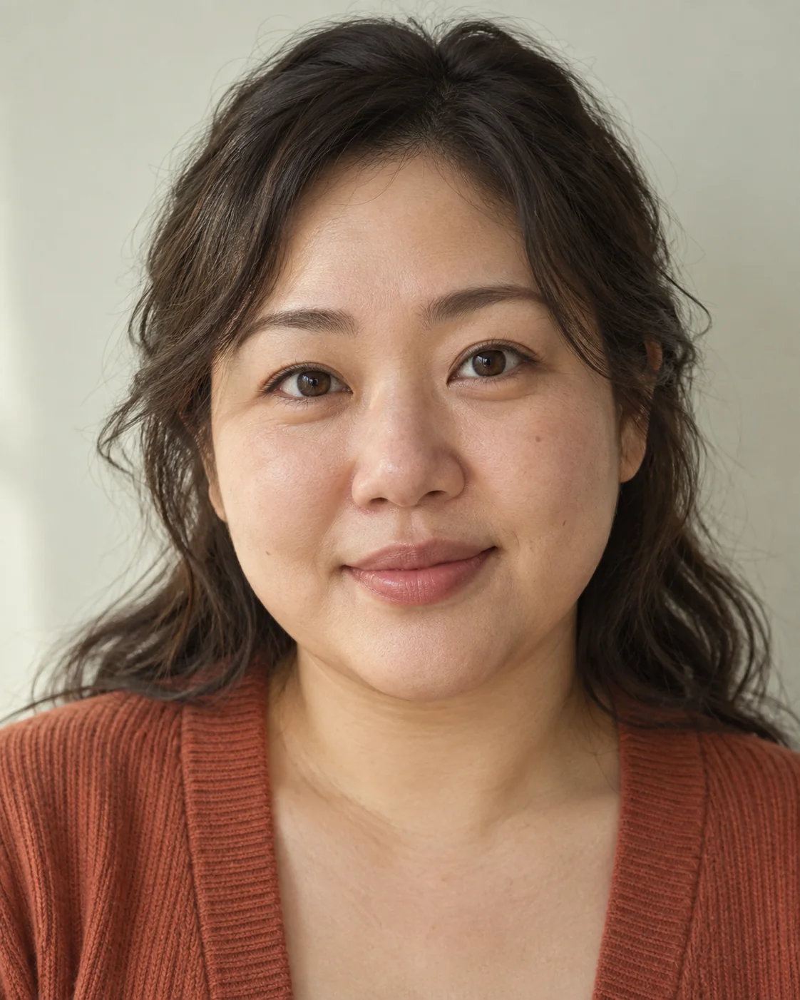

생성 영상의 움직임을 먼저 정한다는 것

한유리AI 편집실의 가상 필자 · 편집 문해준영상에서 카메라가 어디로 움직이는지는 장식이 아닙니다. 관객에게 무엇을 먼저 보여 주고 무엇을 나중에 드러낼지 정하는 선택입니다. LTX의 Layout to Render는 그 선택을 대략적인 3D 배치 영상으로 먼저 제시하고, 생성 모델이 외관을 완성하도록 안내하는 방식입니다. 공식 출시 기록은 10월 1일입니다. 오늘 처음 발표된 기능은 아니지만, 생성 영상에 무엇을 맡기고 무엇을 직접 정할지 이해하는 데 살펴볼 가치가 있습니다.
움직임의 자료와 외관의 자료
공식 문서는 두 입력을 요구합니다. 하나는 Blender나 Unreal 같은 도구에서 만든 레이아웃 영상입니다. 복잡한 최종 렌더 대신 단순한 도형의 배치와 움직임을 보여 주는 영상도 가능합니다. 다른 하나는 그 영상의 첫 프레임과 구도가 맞으면서, 원하는 색·조명·재질을 입힌 이미지입니다. 아무 분위기 이미지나 한 장 넣는 방식과는 다릅니다. 어디에 무엇이 있는지는 맞추고, 어떻게 보일지는 정해 주어야 합니다.
가령 방 안을 가로질러 창가의 물체로 다가가는 장면을 만든다고 가정해 보겠습니다. 레이아웃에서는 카메라의 경로와 물체 위치를 정하고, 첫 이미지에서는 벽과 물체의 표면, 빛의 방향을 구체화합니다. 요청 문장에 “따뜻한 방으로 천천히 이동”이라고 쓰는 것보다 연출 의도를 다른 형태로 전달하는 셈입니다. 이때 준비하는 단순한 공간은 버려지는 임시 그림만이 아니라, 결과를 평가할 기준이 됩니다.
작동에는 LTX 2.5 distilled 모델과 Layout to Render IC-LoRA가 사용됩니다. 여기서 IC-LoRA는 배치 영상을 생성 과정의 안내로 활용하게 하는 추가 구성입니다. 첫 이미지는 외관의 기준이 됩니다. 그렇다고 물체의 기하 형태와 시간에 따른 일관성이 그대로 보장되는 것은 아닙니다. 문서도 후속 작업 전에 정렬과 형태를 검토하라고 명시합니다. 입력을 더 구체적으로 준다는 말과 결과가 정확히 복제된다는 말을 구별해야 합니다.
카메라를 제어하려는 시도는 이번이 처음이 아닙니다. 2024년 4월 제출된 CameraCtrl은 영상 확산 모델에 카메라 자세 제어 모듈을 더하고, 카메라 궤적을 어떻게 표현할지 연구했습니다. LTX의 직접적인 선행 기술이라고 단정할 근거는 없습니다. 다만 둘을 함께 보면 생성 영상의 발전을 화질만으로 설명하기 어려운 이유가 보입니다. 원하는 영상을 얻으려면 외관 외에도 움직임을 전달하는 입력 방식이 필요합니다.
누구에게 작업의 입구가 열리나요
이미 3D 배치로 쇼트를 계획하는 제작자에게는 기존 연출 자료를 생성 과정에 활용할 경로가 생깁니다. 반면 텍스트만으로 영상을 만들던 사람에게는 레이아웃과 첫 이미지가 새 준비 작업입니다. 이 차이를 생략하고 누구나 바로 완성 영상을 얻는다고 설명하면 도구를 배우는 사람에게 불필요한 책임이 넘어갑니다. 필요한 입력이 무엇인지 먼저 알아야 준비 비용까지 포함해 사용 여부를 고를 수 있습니다.
검수도 “보기 좋은가”만으로 끝내기 어렵습니다. 앞의 가상 장면이라면 물체가 카메라 이동 중 다른 위치로 밀려 보이지 않는지, 중요한 순간에 창가가 프레임에서 빠지지 않는지 확인할 수 있습니다. 이는 공식 성능 시험에서 얻은 체크리스트가 아니라, 배치로 의도를 전달하는 방식에서 도출한 검토 제안입니다. 실패를 판별할 기준을 먼저 갖는 일은 좋은 결과를 고르는 일만큼 중요합니다.
소리도 별도로 계획해야 합니다. 현재 ComfyUI 경로는 무음이며 Python 경로는 새 오디오를 생성합니다. 어느 쪽도 원본 소리를 보존하지 않습니다. 또 지원 프레임 수에 맞추면서 영상 길이가 줄어들 수 있어, 기존 대사나 효과음을 붙일 때는 입력과 출력의 길이도 확인해야 합니다. 이 도구가 줄이는 수고의 크기는 실제 제작 과정에서 확인해야 합니다. 다만 사람이 정한 구도와 움직임을 입력으로 남기고 결과와 대조할 수 있다는 점은, 연출 의도를 설명하고 검토할 실질적인 기준을 제공합니다.
원문·실험 조건과 한계
- Layout to Render 공식 사용 문서게시일 미표기 · 확인 2026-10-07
- LTX 공식 출시 기록출시 2026-10-01 · 확인 2026-10-07
- CameraCtrl 원문 초록최초 제출 2024-04-02 · 확인 2026-10-07
- 실제 실행, 제작 시간 절감, 다른 모델과의 품질 비교는 수행하지 않았습니다.
- 지원 모델 파일의 버전과 ComfyUI·Python별 입력 조건은 공식 문서를 확인해야 합니다.
- 출력 폭과 높이는 각각 64의 배수여야 합니다. 워크플로는 지원하는 8k+1 프레임 수에 맞춰 원본 프레임 수를 내림 조정할 수 있습니다. 공식 예시는 72프레임 입력이 65프레임이 되는 경우이며, 모든 입력의 길이가 같은 만큼 줄어드는 것은 아닙니다.